In this document, we demonstrate how to solve a 1D eigenproblem (eigenvalues of the 1D Laplace operator in a bounded domain) by creating custom elements. The tutorial is similar in spirit to the quick guide but far less detailed.
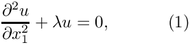 in the domain 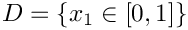, with homogeneous Dirichlet boundary conditions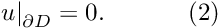 |
An eigenfunction must be non-zero by definition and so the exact solutions are given by the countably infinite set:
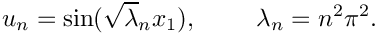
We provide a detailed discussion of the driver code harmonic.cc which solves the problem for the first four eigenvalues.
In oomph-lib all eigenproblems are solved by using interfaces to third-party libraries. The default is LAPACK's (direct) QZ solver which is included with the library. An interface is also provided to the ANASAZI solver, part of The Trilinos Project, a suite of iterative solvers. Thus, if you want to solve small problems, use the default QZ solver; for larger problems, we recommend using ANASAZI.
Overview of the theory
A discrete (linear) eigenproblem takes the form
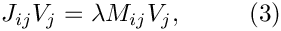
where  is the vector of discrete unknowns,
is the vector of discrete unknowns,  is the eigenvalue, and 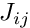 and
is the eigenvalue, and 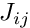 and  are two matrices: 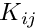 (often denoted 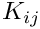 in the literature) is known as the stiffness matrix and 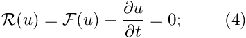 is termed the mass matrix. The third-party libraries mentioned above all solve systems of the form (3), and within
are two matrices: 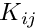 (often denoted 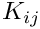 in the literature) is known as the stiffness matrix and 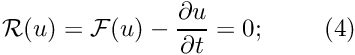 is termed the mass matrix. The third-party libraries mentioned above all solve systems of the form (3), and within oomph-lib we must simply provide the required mass and stiffness matrices.
Linear Stability Theory
In many cases, eigenproblems arise from linear stability analyses of steady solutions to our set of nonlinear residuals. For example, if we have a time-dependent system of equations
![\[ \frac{\partial u}{\partial t} = \mathcal{F}(u), \]](form_12.png)
then the residual formulation is
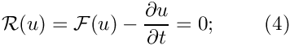
and steady solutions, 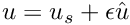 are found by setting 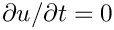. Note that in a nonlinear system there may be many possible steady solutions for the same set of parameter values.
A linear stability analysis proceeds by assuming that the steady solution is perturbed by a small amount, so that 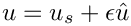, where 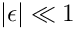. If we substitute this expression into the governing equation (4) and neglect terms that involve 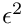 (on the assumption that they are really small) then we obtain the equation:
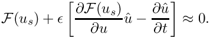
Note that we have used a Taylor expansion of 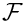, so we are assuming that such an operation "makes sense". The solution 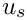 is a steady state, so by definition 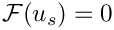 and then we are left with the linear equation
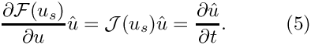
The Jacobian 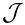 is exactly the same as that required by the Newton method when solving the steady set of equations, 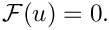
The general solution of equation (5) takes the form 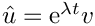 because the only function that is proportional to its derivative is the exponential. The necessary functional form of the solution means that equation (5) becomes
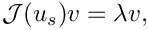
which is an eigenproblem in which the mass "matrix" is the identity. Thus, in order to assess the stability of a solution to our nonlinear system we must solve an eigenproblem using the Jacobian matrix, which is why we used the notation rather than in equation (3). The solution is said to be linearly stable if the real part of all eigenvalues is negative because then the perturbation decays as 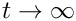, but it is linearly unstable if even a single eigenvalue has positive real part. Note that in even more general equations the mass "matrix" is not necessarily the identity.
Weak formulation of the problem
If we wish to solve the problem (1) using finite elements, we must first derive the weak form, which follows from the standard procedure of multiplication by a test function and integration by parts
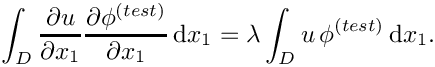
Note that the boundary terms are neglected as a consequence of the Dirichlet boundary conditions.
If we expand the 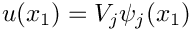 in terms of known basis functions and use the same basis functions as our test functions (Galerkin method), then the weak form becomes
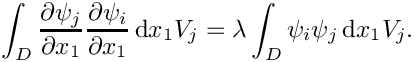
On comparison with equation (3), we identify the Jacobian and mass matrices
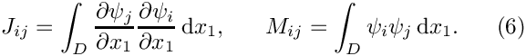
Implementation
In oomph-lib, eigenproblems are formulated on an element-by-element basis in a similar way to standard problems. Eigenproblems make use of the function
where the Jacobian is the matrix  and the mass matrix is
and the mass matrix is  in equation (3). The residuals need not be returned when solving an eigenproblem, but the interface is chosen so that linear stability of solutions to the nonlinear system can easily be calculated without reformulating the problem.
in equation (3). The residuals need not be returned when solving an eigenproblem, but the interface is chosen so that linear stability of solutions to the nonlinear system can easily be calculated without reformulating the problem.
Once again, to avoid reinitialisation in multi-physics problems, the helper function
is used and this will be overloaded in our custom elements below.
Creating the elements
For generality, we implement the mathematics to assemble contributions to the Jacobian and mass matrices defined in equations (6) in the class HarmonicEquations that inherits from FiniteElement. This construction mirrors that in our standard equation classes and allows a clean separation between the equations and the choice of basis function.
The unknowns that represent the discretised eigenfunction are assumed to be stored at the nodes.
The class contains functions to output the eigenfunction; interpolate the nodal unknown; and provides interfaces for the shape functions and their derivatives. The key function is fill_in_contribution_to_jacobian_and_mass_matrix which implements the calculation of the equations (6). The residuals vector is not filled in and does not need to be unless we also wish to solve an associated (non-eigen) problem.
The shape functions are specified in the QHarmonicElement class that inherits from our standard one-dimensional Lagrange elements QElement<1,NNODE_1D> as well as HarmonicEquations. The number of unknowns (one) is specified and the output functions and shape functions are overloaded as required: the output functions are specified in the HarmonicEquations class, whereas the shape functions are provided by the QElement<1,NNODE_1D> class.
The driver code
In order to solve the 1D eigenproblem using oomph-lib, we represent the mathematical problem defined by equations (1) and (2) in a specific Problem object, HarmonicProblem, which is templated by the element type and the eigensolver. We use QHarmonicElement<3>, a quadratic element and our three different eigensolvers, including timing statements to compare the three approaches. Note that if you do not have Trilinos installed then only the LAPACK_QZ solver will do anything.
The problem class takes a single argument corresponding to the number of elements used to discretise the domain and contains a member function solve that takes an integer used for documentation purposes.
The same problem is then solved with a different solver
and again with the Trilinos ANASAZI solver if it is installed.
The problem class
The HarmonicProblem is derived from oomph-lib's generic Problem class and the specific element type and eigensolver are specified as template parameters to make it easy for the "user" to change either of these from the driver code.
The problem class has four member functions:
- the constructor
HarmonicProblem(...) - the destructor
~HarmonicProblem() - the function
solve(...) - the function
doc_solution(...)
The destructor merely cleans up the memory by deleting the objects that are allocated in the constructor, so we shall not discuss it further here. The doc_solution function is also simple and writes the eigenfunction to a file.
The Problem constructor
In the Problem constructor, we start by creating the eigensolver specified by the second template parameter. We then discretise the domain using oomph-lib's 1DMesh object. The arguments of this object's constructor are the number of elements (whose type is specified by the template parameter), and the domain length. Next, we pin the nodal values on the domain boundaries, which corresponds to applying the Dirichlet boundary conditions. Finally we call the generic Problem::assign_eqn_numbers() routine to set up the equation numbers.
Solving the problem
The solve(...) function is where all the action happens and takes a single unsigned integer argument which is used as a label to distinguish the output from different eigensolvers.
The function Problem::solve_eigenproblem(...) plays an equivalent role to Problem::newton_solve(...) in eigenproblems. Here, additional storage must be allocated for the eigenvalues (a vector of complex numbers) and eigenvectors (a vector of double vectors). The vectors will be resized internally depending on the number of eigenvalues returned. The number is not always the same as the number of eigenvalues requested because both parts of a complex conjugate pair of eigenvalues are always returned. In the solve(..) function we first allocate the required storage, specify the desired number of eigenvalues and then solve the eigenproblem:
The rest of the function post-processes the output from the eigensolver. In order to ensure repeatability of the output for our self-tests the eigenvalues are sorted on the size of their real part. The eigenfunction associated with the second smallest eigenvalue is normalised to have unit length and then output to a file.
In order to output the eigenfunction the values must be transferred to the nodal values so that it can be interpolated. This is performed by the function Problem::assign_eigenvector_to_dofs(...). Note that this function overwrites the existing nodal data, so a backup must be taken if it is important. This can be done using the function Problem::store_current_dof_values() and the stored values can be recovered via Problem::restore_dof_values().
Finally, the sorted eigenvalues are reported and also saved to a file.
Comments and exercises
- Modify the code to compute a different number of eigenvalues. What is the maximum number of eigenvalues that could be computed?
- Write a function to calculate the error between the numerical and exact solutions to the eigenproblem. How does the error vary with changes in the number of elements?
- Compare the errors for each different eigenfunction. What happens to the error as the eigenvalue increase? Can you explain why?
- Repeat the above experiments with
QHarmonicElement<2>. What happens? - Modify the problem to include a convective-like term 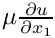. Compare the computed results to the analytic solution. What happens to the eigenvalues and eigenfunctions?
Source files for this tutorial
- The source files for this tutorial are located in the directory:
demo_drivers/eigenproblems/harmonic/ - The driver code is:
demo_drivers/eigenproblems/harmonic/harmonic.cc
PDF file
A pdf version of this document is available. \